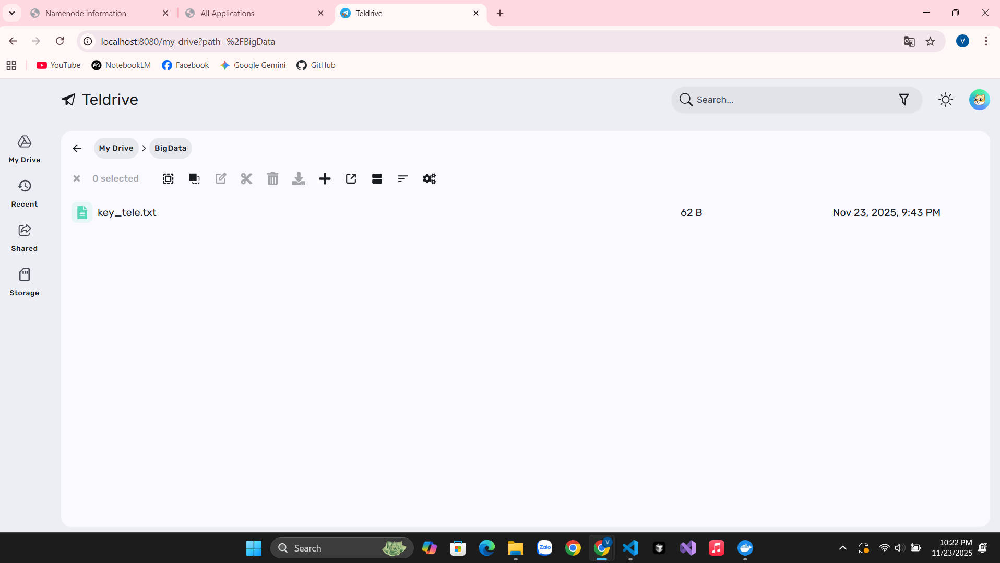
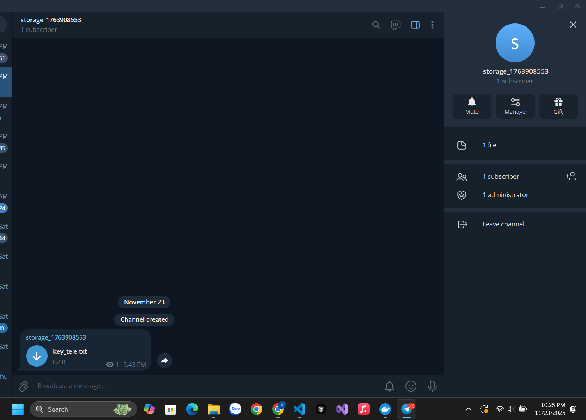

Báo cáo Triển khai Hệ thống Big Data
Dự án xây dựng hệ thống lưu trữ không giới hạn (TeleDrive) kết hợp với cụm xử lý phân tán (Hadoop Cluster) trên nền tảng Docker.

Hình 1: Trạng thái hoạt động của cụm Hadoop Cluster (Active Nodes).
2. Cài đặt TeleDrive (Lưu trữ)
TeleDrive giúp biến Telegram thành ổ đĩa mạng (Cloud Storage) dung lượng lớn.
Cấu hình Docker
# File docker-compose.yml (Đã ẩn mật khẩu)
command: >
run
--tg-app-id=${TG_APP_ID}
--tg-app-hash=${TG_APP_HASH}
--db-data-source=${DB_URL}
--jwt-secret=${JWT_SECRET}
--tg-uploads-encryption-key=${ENCRYPTION_KEY}
env_file:
- .envKết quả triển khai
Giao diện quản lý file sau khi đăng nhập thành công:
Hình 2: Giao diện quản lý file trên trình duyệt (localhost:8080).
Cấu hình kênh lưu trữ (Storage Channel):
Hình 3: Thiết lập kênh Telegram riêng tư làm nơi lưu trữ dữ liệu.
3. Cài đặt Hadoop Cluster (Xử lý)
Hệ thống Hadoop 3.2.1 gồm: Namenode, Datanode, ResourceManager (YARN).
Trạng thái Node (HDFS)
Giao diện quản lý HDFS cho thấy các node đã kết nối:

Hình 4: Thông tin chi tiết các Node trong cụm (Node Manager).
4. Chạy thử nghiệm MapReduce
Thực hiện bài toán tính số Pi bằng phương pháp Monte Carlo trên YARN.
Kết quả thực thi (Terminal)

Hình 5: Kết quả chương trình MapReduce tính số Pi (Estimated value = 3.12).